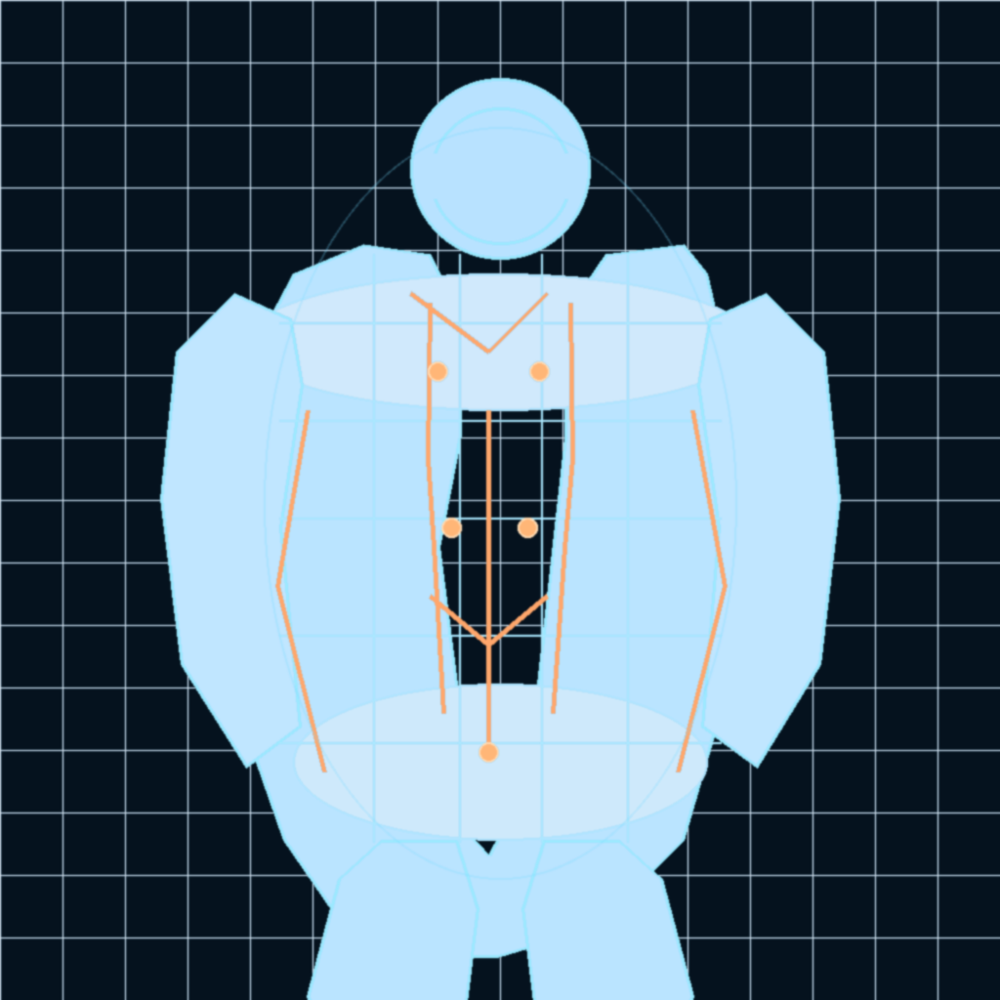

ESTADO MUSCULAR
Rendimiento estable
78/ 100
BASE PERSONAL6 mediciones válidas●
SÁBADO, 14 NOVIEMBRE 2026 · DÍA 84 DE MISIÓN
Seguimiento de músculo, nutrición y capacidad funcional para cuidar tu rendimiento durante la misión.
ESTADO MUSCULAR
METABOLISMO · GLUCOSA
Última medición · hoy, 08:10
RECUPERACIÓN
Después de la sesión de resistencia
GEMELO DIGITAL · MAPA MUSCULAR
Selecciona una zona para consultar su evolución y mediciones.

Espesor por ecografía: 18.4 mm · última lectura hace 2 días.
Ver plan recomendado →EVOLUCIÓN · CUÁDRICEPS
Pequeña variación detectada.
La lectura se mantiene dentro del margen de repetición del dispositivo. Revisa de nuevo en 3 días.
NUTRICIÓN ↔ RECUPERACIÓN
Registro de ingesta de hoy comparado con tu objetivo de misión.
Patrón observado · En días con mayor ingesta proteica registrada, tu recuperación suele ser mejor. Se necesita más seguimiento para evaluar esta asociación.
RECOMENDACIÓN DE HOY
Sentadilla asistida con banda · extensión de rodilla · elevación de talones
Ajusta la carga según el protocolo de ejercicio de misión y las indicaciones del equipo médico.
CONTEXTO PERSONAL · OPCIONAL
El seguimiento puede incorporar ciclo menstrual, terapia hormonal u otras variaciones personales si decides registrarlas. Los datos son privados y solo se usan para contextualizar tendencias.